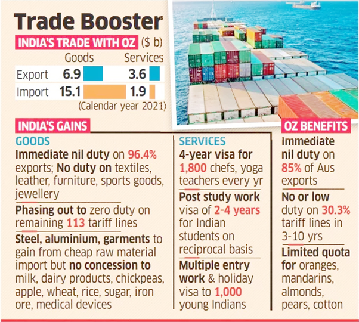

Ministry of Commerce & Industry
India-Australia Economic Cooperation and Trade Agreement (IND-AUS ECTA)
Relevant to M&M-IO, Tech M, MHRIL
-
On April 2nd, India and Australia signed a comprehensive interim free-trade agreement that permits zero duty trade on several items.
-
For India, the ECTA with Australia is the first agreement with a large, developed economy of the world after more than a decade. Australia is also the third OECD country after Japan and South Korea with which India has signed a Free Trade Agreement (FTA).
-
The negotiations for India-Australia ECTA were formally re-launched in September 2021 and concluded on a fast-track basis by the end of March 2022.
-
The two sides will be negotiating for a full-fledged Comprehensive Economic Cooperation Agreement (CECA).
Key Elements of India-Australia ECTA
-
It covers almost all the tariff lines dealt in by India and Australia respectively.
-
India will benefit from preferential market access provided by Australia on 100% of its tariff lines.
-
India will be offering preferential access to Australia on over 70% of its tariff lines.
-
Under the agreement, Indian graduates from STEM (Science, Technology, Engineering and Mathematics) will be granted extended post-study work visas.
-
It will provide zero-duty access to 96% of India’s exports to Australia and will give about 85% of Australia’s exports zero-duty access to the Indian market
-
It will boost bilateral trade in goods and services to USD 45-50 billion over five years, up from around USD 27 billion, and generate over one million jobs in India, according to a government estimate.
-
Up until now, China has dominated the Australian Market for leather goods, footwear, toys, pharmaceuticals, textiles, plastics. Now the India-Australia Economic Cooperation and Trade Agreement could make India a reliable alternative.
-
The agreement also includes strict rules of origin to prevent any routing of products from other countries and provides for a safeguard mechanism to address any sudden surges in imports of a product.
Significance
-
Enhanced Exports: Currently, Indian exports face a tariff disadvantage of 4-5% in many labour-intensive sectors vis-à-vis competitors in the Australian market such as China, Thailand, Vietnam, South Korea, Japan, Indonesia and Malaysia.
-
Removing these barriers under the ECTA can enhance India’s merchandise exports significantly.
-
Cheaper Raw Materials: Australian exports to India are more concentrated in raw materials and intermediate products. Due to zero-duty access to 85% of Australian products, many industries in India will get cheaper raw materials and thus become more competitive, particularly in sectors like steel, aluminium, power, engineering and so on.
-
Change in Perceptions for India: The recent trade agreement will also assist in changing perceptions in the developed world which has always typecast India as ‘protectionist’ and address scepticism around India’s openness to do business with the world.
-
Stronger Indo-Pacific: Strong Australia India economic ties will also pave the way for a stronger Indo-Pacific economic architecture, that’s not just based on flows of physical goods, money, and people, but on the basis of building capacity led connections, complementarities, sustainable commitments and mutual dependence across countries and sub-regions.
Investment Protection
-
While ECTA makes references to investment as part of the trade in services, it lacks provisions on investment protection such as providing foreign investment to most favoured nation and national treatment, protection from expropriation, assurance to provide fair and equitable treatment to foreign investment, recognising foreign investor’s right to bring claims against the State for alleged treaty breaches.
-
Article 14.5 of ECTA, which includes a list of topics on which negotiations will take place to transform the interim ECTA into a comprehensive CECA, also does not talk of a chapter on investment protection.
-
It needs to be noted that Australia has signed comprehensive economic agreements with Peru, Indonesia, and Hong Kong which include a chapter on investment protection.
-
On the other hand, India’s recent CECA with the United Arab Emirates (UAE) as well as Mauritius (signed in 2021) does not include an investment chapter.
-
The pattern that seems to be emerging is that India is not too keen to include an investment protection chapter in CECAs.
How Excluding Investment would Impact India?
-
India’s rationale for signing a comprehensive economic agreement with these countries is to be part of the global value chains (GVCs), both, trade and foreign investment are central to GVCs.
- Therefore, decoupling trade from investment in these CECAs defies economic sagacity.
-
Many recent mega economic treaties such as the RCEP Agreement and the Comprehensive and Progressive Agreement for Trans-Pacific Partnership (CPTPP) include chapters on investment protection.

Way Forward
-
Investment Protection: India’s overly defensive stand on investment protection under international law is a consequence of several international claims under BITs.
- India should come out of its shell and accept investment protection as part of its broader economic commitments under international law. This will enable India to realise the full potential of these CECAs.
-
Adding Investment Chapters: If investment protection is made a part of such CECAs, India will have a better bargaining position to negotiate balanced investment chapters in comparison to a standalone investment treaty.
- When several related issues are part of the same deal, there is a greater likelihood of “give and take” and reaching a win-win compromise.
-
Improving Competitiveness: While the Government of India has successfully negotiated an excellent trade deal for businesses, it is important to realise that accessing the Australian market wouldn’t be a cakewalk given the fact that Australia has currently 16 FTAs under operation.
- We would still have to work on improving our competitiveness, as in most trade sectors, India would be competing with the likes of China, ASEAN, Chile, Japan, Korea, and New Zealand, which have already-functional FTAs with Australia.
-
APEC Partnership: Time is also opportune for India’s Asia-Pacific Economic Cooperation (APEC) membership, the goal of a free and open Indo-Pacific is incomplete without the presence of the world's fastest growing major economy in APEC.
- It would further enhance India’s role in global governance, encouraging greater economic reforms with improved domestic competitiveness, and economic integration with the region as a whole.
- Also, with the deepening of Australia India bilateral ties, Australia can explore initiating a support lobby within APEC for India’s membership.
Industry Reactions
|
Shri Piyush Goyal, Minister of Commerce & Industry, Government of India
|
India’s manufacturing sector, particularly micro, small, and medium enterprises (MSMEs) are interested in the Australian market as the agreement unlocks huge opportunities for Indian exports of automobiles, textiles, footwears and leather prod gems and jewellery, toys and plastic products.
Australia has a market for pharmaceuticals worth about ₹1 lakh crore or $12 billion. But Indian exports are miniscule [$345 million]. With this agreement, the regulations have been significantly eased to facilitate exports of medicines from India
|
|
Mr. TV Narendran, President, CII; CEO and Managing Director, Tata Steel
|
For Australia, India presents a good alternative to China, and the ECTA agreement will certainly enhance bilateral trade engagements between India and Australia. It has huge potential, and the FTA will unlock it.
|
|
Ms. Anushkaa Arora, Principal & Founder, ABA Law Office.
|
The FTA shall benefit Australis’s agro market as this FTA shall open some of these agricultural goods markets gradually. The FTA shall enhance ability towards travel and work for citizens.
|
|
Mr. Suhail Nathani, Managing Partner, Economic Laws Practice
|
The India-Australia ECTA is a win-win opportunity for both economies and it opens the benefits of scale and thus lower costing to Australian consumer and large Indian market for minerals, and wine.
From Indian perspective, the relaxing of visa requirements, opportunities for pharma, dual-degree programmes are unprecedented
This is truly an opportunity for India to enter the mainstream of global market and take advantage of China plus one supply chain opportunity.
|
|
RK Jalan, Vice Chairman, Council for Leather Exports
|
The agreement will certainly boost India’s footwear and leather exports
India currently has 3-5% market share in the about $2 billion Australian market [of footwear and leather accessories], which is largely dominated by China. After duty free exports, Indian products can compete with Chinese products, and Indian exports can be raised by 25%.
|
|
Mr. Dig Howitt, CEO and President, Cochlear Ltd
|
1.3 billion-people Indian market is the major attraction for both trade and investments.
|
|
Mr. Jayesh Kothari, Associate Partner, DSK Legal
|
U.K. and Australia join a growing list of countries negotiating trade deals with India which includes Russia, Canada, GCC, and South Africa.
With these initiatives, India is well poised to push the “preferred trade partner” agenda on the global platform which will be the major push for the domestic manufacturing sector in India.
|
Conclusion
-
Australia is a welcome inclusion in the list of countries for FTA with India. Indo-Australia FTA is certainly going to be a win-win situation for both the countries as the consumers and producers of both the countries are going to be benefited equally.
-
As India is dependent on Australia for the raw materials for its industries, FTA is going to cut cost of production and provide good market access to its finished products.